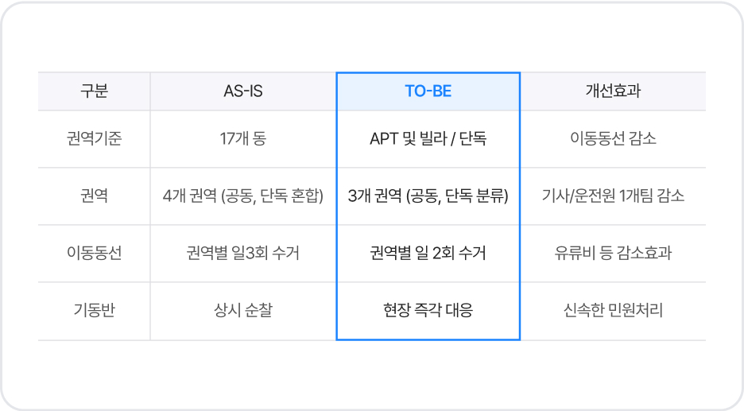
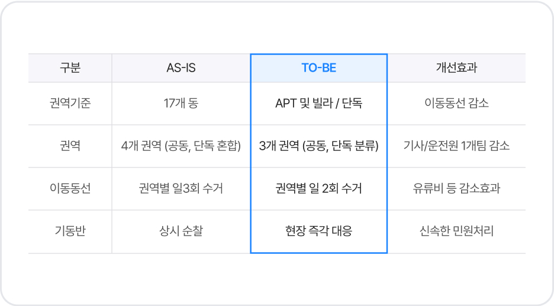

공공기관
폐기물 처리 예산 절감 및 집하장 위탁 수익, 폐기물 판매 수익까지
전국 37개 지자체가 천일에너지의 ESG 경영과 함께 합니다.
 상생&협력
공공기관
상생&협력
공공기관
공공기관 상생&협력 효과
01
생활폐목재, 임목폐기물, 커피박
무상처리를 위한 예산 절감 효과
전국 39개 지자체 생활폐목재, 임목폐기물 무상처리로
연간 109억원 예산절감 기여
천일에너지는 ESG 경영의 일환으로 수많은 지자체의 생활폐목재,
임목폐기물 및 커피박을 무상처리합니다. 이미 서울 권역 17개구, 경기 권역 16개 시군, 인천 2개 구군, 강원 4개 시군 등 전국 39개의 지자체에서
천일에너지를 통해 예산 절감 효과를 얻고 있습니다. 지속적으로 지자체와의 협력을 확대해 나갈 예정입니다.
(평균 65,000원/톤 처리비 예산절감, 상차/운반/처리비 포함)
02
미이용 산림바이오매스(임목폐기물)
친환경 재생에너지 자원화
(사례) 서울 4개 자치구, 임목폐기물 2,281톤/연의
처리비용 약 2억 원 절감에 기여
지자체 임목폐기물 처리비, 톤당 100,000원 절감
천일에너지는 도심 내 숲 가꾸기나 가로수 조성 · 관리를 위한 벌채 및
가지치기 과정에서 나온 부산물을 무상수거 후 친환경 신재생에너지인
‘목재칩’으로 무상 재활용하여 지속가능한 환경도시 조성에 적극적으로 기여하고 있습니다.
2024년 3월 13일, 서울특별시 동대문구, 중구, 성동구, 광진구와 임목폐기물 자원화를 위한 공동협약을 체결하여 4개 자치구 내 발생하는 임목폐기물 약 2,281톤/연의 처리 예산 약 2억 원의 절감효과를 창출하는 등 지자체 발생 폐기물의 자원선순환 체계 구축을 선도하는 친환경 신재생에너지 기업입니다.
03
지자체 폐기물 처리방법의
패러다임 대전환
국내 유일, 국내 최대 One-stop 폐기물처리 시스템 도입
천일에너지는 전국 최초로 구축한 [배출접수 – 수집·운반 – 집하 – 처리 – 재자원화] 등 폐기물 처리의 전 과정 수직계열화 운영으로 폐기물의 안정적인 수거 및 효율적인 처리가 가능합니다.
지자체 행정업무 감소 및 행정서비스 향상을 위해 폐기물처리의 전문 기술력과 차세대 스마트 기술을 바탕으로 자체 개발한 애플리케이션 ‘지구하다’와 폐기물 관리 ERP를 도입하여 행정시스템 개선에 적극 기여하고 있습니다.
One-stop 폐기물처리 시스템을 기반으로 지자체 대형생활폐기물 수집운반 민간위탁 분리발주(전 권역 통합운영) 수행 시 현행 예산 대비 15% 이상 절감 및 향상된 수거체계를 제공하고 있습니다.
 

천일에너지는 지자체 폐기물 관련 민간위탁 신규계약 시 기존 인력 100% 승계(고용보장) 등 안정적인 행정서비스 환경을 구축합니다. 예) 인천광역시 연수구 및 서구, ‘24년 용역수행 계약일로부터 2주 내 100% 고용승계 완료
04
공공선별장 위탁운영 기반 관내 공사장
생활폐기물의 안정적 처리
지자체 공공선별장 무상 위탁운영, 연간 총 15억 원의
운영관리 예산 절감 및 세외수입(공유재산 사용수익)에 기여
천일에너지는 경기도 안양시에서 관내 최초 공공선별장 지정 운영을 시작으로 총 3개소 공공선별장의 시설구축(기부채납 약 2억 원/1개소) 및 안정적 운영으로 지자체별 연간 5억 원의 운영관리 예산 절감 및 세외수입(공유재산 사용수익)에 적극 기여하고 있습니다.
공공기관 상생&협력 업무

폐목재/임목폐기물/커피박 등 폐기물 무상 처리
대형생활폐기물(폐목재)과 식물성잔재물(커피박)은 BIO-SRF(우드칩)으로, 임목폐기물은 목재칩으로 무상수거, 제조/생산하여 화석연료의 대체 에너지원으로 사용합니다.
폐기물 공공선별장 및 적환장 위탁 운영
공사장 생활폐기물 공공선별장 및 대형생활폐기물 적환장 운영을 통해 폐기물의 성상별 분리/선별을 강화하여 재활용률을 증대합니다. 또한, 축적된 노하우를 통한 효율적인 운영으로 운영관리비 등을 절감합니다.
대형생활폐기물 위탁 처리
폐기물의 자체 처리 및 협력사 납품을 통한 처리비용 절감을 실현하여, 기존 소각/매립에 의존하던 대형생활폐기물의 처리를 100% 재활용하여 자원순환 사회에 기여합니다. 폐목재는 BIO-SRF(우드칩)로 폐합성수지는 시멘트 제조 연료 및 원료로, 폐콘크리트는 순환골재 등으로 재활용됩니다.
대형생활폐기물 수집/운반 용역대행
주거형태 기준 권역 재설정, 배출접수 APP, 통합솔루션 ERP, GPS 운영 등 스마트 기술 기반의 효율적인 운영으로 관할구역을 통합하여 대형생활폐기물의 수집/운반 시스템을 실현하여 예산절감에 기여합니다. 또한, 전문 CS 교육을 수료한 자체 통합콜센터 운영으로 민원에 적극 대응하여 행정서비스 향상에 기여합니다.
상생&협력 공공기관
Contact Us
주요 서비스 및 사업 제휴 문의를 원하신다면